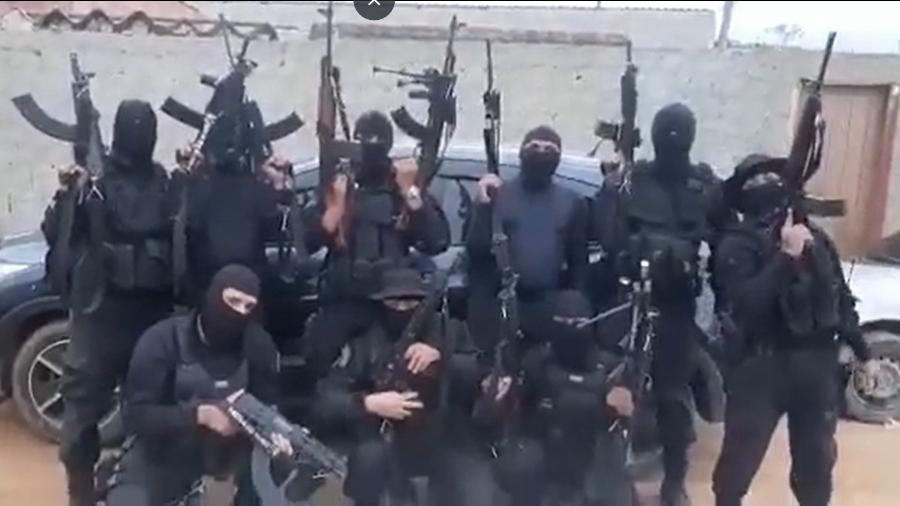

Milícias Cariocas
O que são milícias?
A milícia é um poder paralelo, que
não integra as forças armadas
ou de polícia de
um país, composta por militares, para militares ou civis armados. De acordo
com a Anistia Internacional, as
milícias utilizam da força para extorquir a população em
determinados
territórios urbanos ao redor do mundo, para que através dos recursos
obtidos, consigam se
manter tanto economicamente, quanto politicamente.
As milícias nem sempre foram apontadas como organizações criminosas, principalmente em sua atuação nas zonas de guerra em países e territórios como o Oriente Médio. Lá, o conceito de milícia era voltado para uma composição extra-oficial de forças de combate, geralmente em situações de guerra civil e resistência contra inimigos variados.
Entretanto, a ideia de milícia ganhou uma nova abordagem a partir do momento em que esse tipo de organização tomou os centros urbanos, ocupando espaços nos quais A PRESENçA DO ESTADO é QUASE NULA, como as favelas do Rio de Janeiro[ae].
Nesse novo tipo de organização, as milícias são compostas por agentes públicos de segurança, particularmente policiais militares (ou ex-policiais) e também por civis armados.
Como as milícias atuam?
Dentro do contexto político atual, principalmente nas regiões cariocas, o termo milícia passou a ser utilizado para denominar grupos criminosos COMPOSTOS POR AGENTES DE SEGURANçA, CIVIS ARMADOS, EX-AGENTES DE SEGURANçA. Essas corporações (ilegais, criminosas) têm como intuito exercer o CONTROLE EXTORSIVO E OPRESSOR sobre as comunidades periféricas das grandes cidades brasileiras, tal como ocorre na cidade do Rio de Janeiro.

A função e o objetivo das milícias é, em um contexto macro, obter vantagens políticas, econômicas e sociais. Na prática, é esse tipo de objetivo que separa as milícias de outros grupos criminosos, como os grupos de extermínio.
Em muitas comunidades, as MILíCIAS OFERECEM DIVERSOS “TIPOS DE SERVIçOS” PARA AQUELAS COMUNIDADES DESASSISTIDAS PELO SERVIçO PÚBLICO, onde tais atividades vão desde segurança, venda de produtos essenciais até tráfico de drogas e armas. Tais atividades são visadas com dois intuitos:
Como surgiram as milícias brasileiras?

Segundo alguns estudiosos, como o antropólogo Paulo Storani, é possível destrinchar o surgimento das milícias cariocas em três períodos diferentes, sendo o primeiro deles do início dos anos 1980. Nessa época, ORGANIZAçõES DA COMUNIDADE OFERECIAM AUTOPROTEçãO, sendo compostas pelos moradores e trabalhadores da própria comunidade.
O segundo passo para o avanço das milícias como as que conhecemos hoje formou-se a partir do momento em que agentes do Estado (membros dos órgão de segurança pública, ex agentese de segurança, dentre outros) receberam moradias em conjuntos habitacionais, particularmente na parte oeste da cidade do Rio de Janeiro. Esses agentes se organizaram para combater a instalação de traficantes em suas comunidades.
Por fim, as milícias avançaram para as organizações criminosas que atuam hoje em dia, quando POLICIAIS ENXERGARAM A OPORTUNIDADE DE EXPLORAçãO DE ATIVIDADES ECONôMICAS NAS COMUNIDADES CARENTES, PRINCIPALMENTE APóS A EXPULSãO DOS TRAFICANTES.
Milícias na Política do Rio de Janeiro
O Rio de Janeiro é, na opinião do autor, o principal centro de atuação das milícias nos dias de hoje. Em um processo de gradual substituição dos DESTAQUES DO CRIME: saiu a figura do traficante “bandido” para a do miliciano “político”, uma vez que eles atuam também na esfera política das comunidades.
Essa penetração no governo é tão grande que hoje já se chegou ao ponto de descobrir a ligação entre políticos eleitos que oferecem, há tempos, cargos públicos em seus gabinetes para milicianos e seus familiares.
Com base nesta exposição, observa-se uma uma grande dificuldade em combater as milícias. Isso se vê, além do respaldo dado por alguns políticos, do fato da milícia ser composta por agentes públicos, situação que torna esse combate muito mais complexo do que possa parecer.
Um bom exemplo de como as milícias atuam no Rio de Janeiro é o filme Tropa de Elite 2. Nele, a relação entre milicianos e políticos fica muito clara, bem como a forte estruturação entre o poder do governo e a atuação desses grupos principalmente nas comunidades periféricas da cidade.

Sendo assim, vale concluir que a presença de milícias é ainda é um agravante muito sério para a socieadade, pois é através dela que o crime organizado consegue adquirir força e recursos para manter suas atividade ilegais. Por isso, é necessário que os órgãos públicos hajam de maneira mais efetiva encima de tais infratores, criando leis mais rígidas e severas para aqueles que se aliciar a tais movimentos. Vale também ressaltar também que se os órgãos de segurança pública tivessem mais recursos e liberdade para agirem em operações a comunidades afetadas pelo crime organizado (tal como as milícias), amenizaria as ações do crime e com certeza diminuiria a força de tais movimentos.